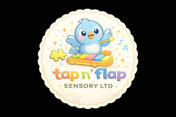

Trade Mark Journal No.2026/003 16 January 2026
UK00004316995 29 December 2025 (16,28,35,41)

- Class 16
- Books; Non-fiction books; Fiction books; Series of non-fiction books; Writing books; Books for children; Ledgers [books]; Copy books; Printed books; Covers for books; Series of fiction books; Coloring books; Educational books; Fantasy books; Story books; Colouring books; Painting books; Baby books [storybooks]; Picture books; Gift books; Drawing books; School writing books; Birthday books; Activity books; Children's books; Note books; Baby books; Log books; Sketch books; Appointment books; Expense books; Novels; Blank journal books; Books featuring fictional stories.
- Class 28
- Toys; Toys, games, and playthings; Toys and playthings for pets; Cuddly toys; Puzzles [toys]; Toys for sandpits; Plush toys; Stuffed toys; Inflatable toys; Noisemakers [toys]; Toys for babies; Fidget toys; Windup toys; Rattles [toys]; Wooden toys; Toys for infants; Model cars [toys or playthings]; Educational toys; Outdoor toys; Models being toys; Infant toys; Sand toys; Developmental toys; Stacking toys; Fabric toys; Model toys; Play mats incorporating infant toys [playthings]; Sketching toys; Children's toys; Smart toys; Clothing for toy figures; Toy animals; Assembly toys; Toys in the form of puzzles; Novelty toys for parties; Puzzle mats [toys]; Playthings.
- Class 35
- Retail services in relation to toys.
- Class 41
- Rental of toys.
Lauren E Mirza